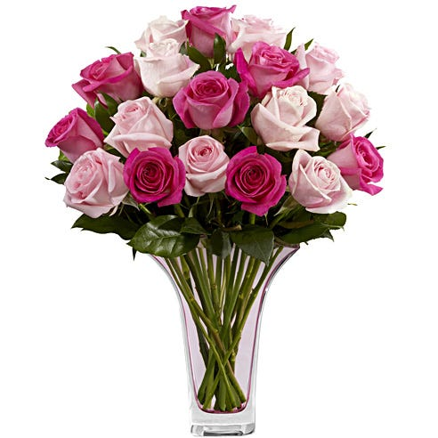
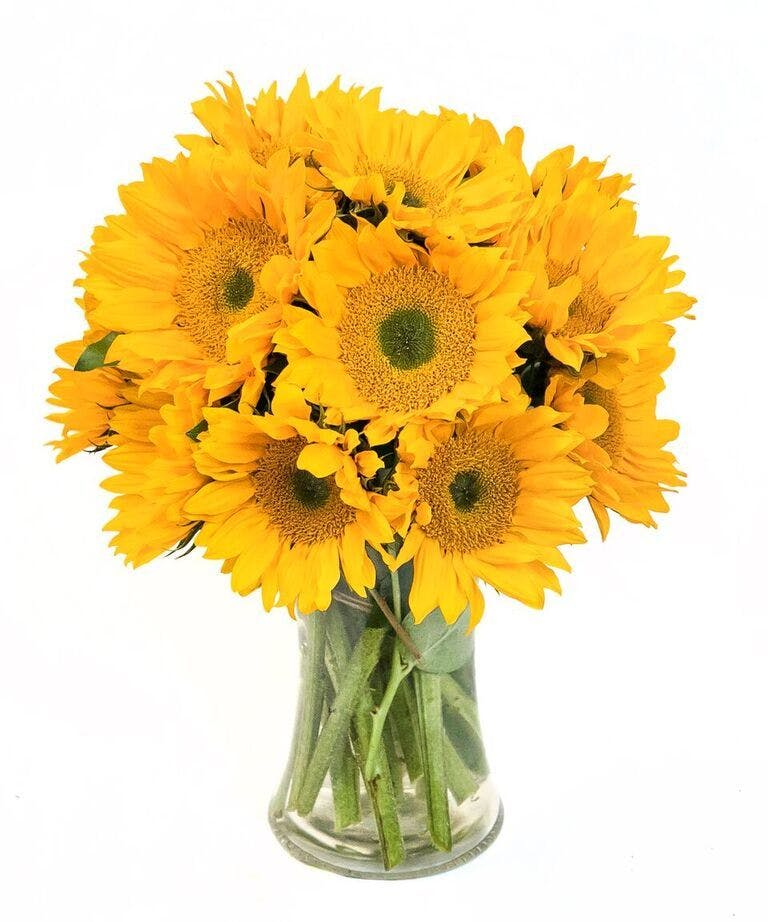
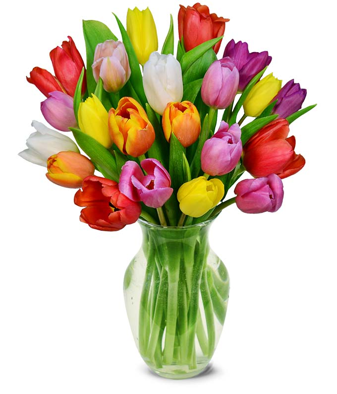
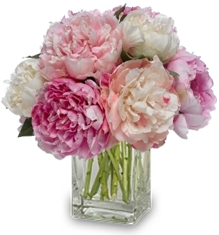
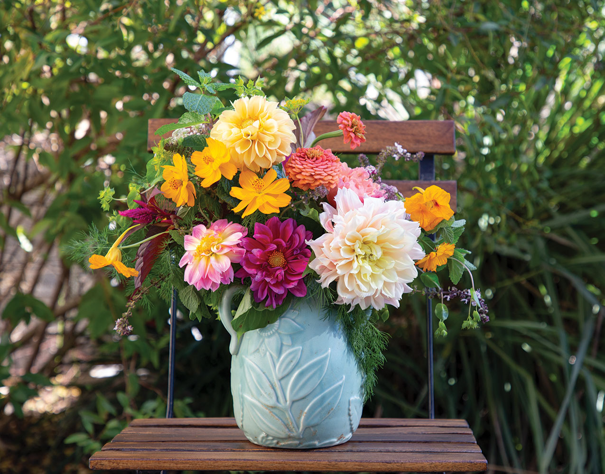
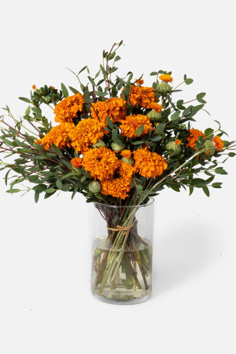

| Flowers |
Identifications |
|  |
Like the flower itself, the history of the Rose is very colorful. Roses have been naturally growing for over 35 million years! However, they were not known to be cultivated until about 5,000 years ago.
Their usage began not just as a decorative touch to one’s home, but they were also used for medicinal purposes, to make perfumes, and their petals were even used as confetti for festive occasions.
Getting your roses into water quickly is the first step in caring for them. Fill a vase ¾ full of fresh, cool tap water. The roses will absorb the water, soaking up the nutrients that will travel up to the bloom and create a lively flower.
Check the water level in your rose’s vase every day and add more water as needed. Shop these classic flowers for Valentine’s Day! |
|  |
Sunflowers are one of the most popular flower types and are best known for their dazzling yellow color and large size. Sunflowers generally symbolize adoration,
loyalty and longevity in flower language. Native Americans view sunflowers as a symbol of harvest and bounty since the flower provides seeds and pigments on top of being visually beautiful.
Sunflowers need direct sunlight for 6 to 8 hours per day and require hot conditions to flower well. Sunflowers also have long roots that require plenty of room to spread out, so soil should be welldug and not too dense for growth.
Avoid over fertilization or risk your stems breaking in the fall |
|  |
There are over 150 species of Tulipswith over 3,000 different varieties and are part of the lily family. Like most common flowers,
tulips come in a large variety of colors that each have their own meaning.
As a signal of the arrival of spring, these blooms are often associated with the Easter holiday.
Tulips were at one point more valuable than gold in Holland during a period of “Tulip Mania” and their popularity has only spread with time!
Tulip bulbs should be planted in the fall in areas where they can receive partial to full sun. Tulips will fare better in soil that allows for drainage since over watering will drown the bulb and roots. |
|  |
From white to red, coral, purple, pink, and yellow, Peonies can come in a variety of colors!
The key to growing a thriving peony is to make sure you plant at the proper time, plant correctly, and of course, care for it all throughout the year, even when they aren’t necessarily in season.
Since peonies can grow rather tall (sometimes even as tall as five feet!), you’ll need to make sure that the spot you choose is spacious enough. And remember, peonies can come back year after year,
so you’ll need to think long term |
|  |
These bold bloom Dahlia comes in a wide range of color and can be easily incorporated into any existing or new garden. And unlike most plants, these flowers thrive in some shade.
They also flower extremely long, first blooming midsummer and lasting through the first frost. However, even though Dahlias are perennials, they are tuberous rooted plants so they should be replanted every spring after resting. |
|  |
Beautifully orange and gold in color, Marigolds are known to symbolize a desire for wealth and to succeed. They are such a bright color that their pigments are also used in the textile and food industry!
Marigolds are a versatile flower – they may also be used when grieving over the loss of a loved one or when celebrating those who have passed. |